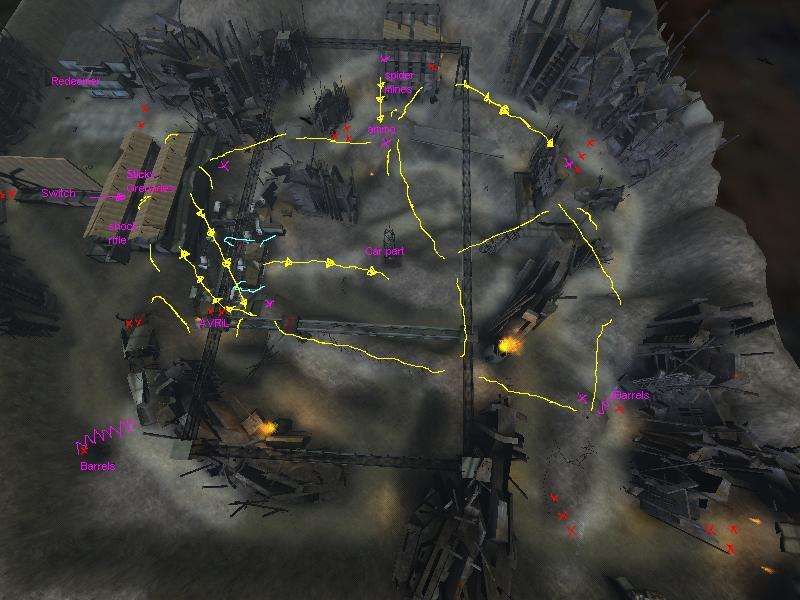
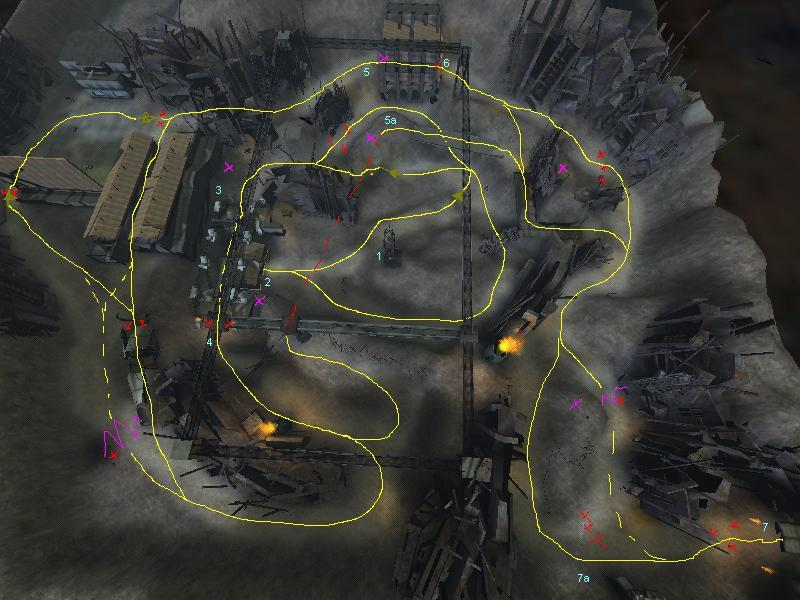

Assault walkthrough
Warning: inbound airstrike - Female announcer
UT99 introduced a new gametype into the gaming industry: assault. The goal
was for team A to attack and perform some objectives, which were dependant on
the layout of the map, while team B tried to stop these guys. If A succeeded
in these goals, the roles were reversed. The difference was that the attacking
team now had to prove that they could perform the assault faster than team A.
If they could, they scored a point; if they couldn't; team A got the point.
Simple.
Strange enough, assault dissapeared when UT2003 came out. But as you know, UT2004
includes a slightly improved version of this mode as well. The differences are
as follows:
- there is now always a second round. If team A didn't achieve every goal, the point goes to the team which achieved the most objectives, or got closest to completion of the objective
- if an objective is completed that causes the respawn point to change for attackers and/or defenders, these guys can press their translocator button (T by default) to switch to that respawn position.
- momentum is as good as removed from the shieldgun and the bio rifle, so you can't use it to jump yourself a shortcuts around the map
- the scoring system is changed: everyone that helps the completion of the objective gets a part of the score, but the person that finishes it gets a trophy. There are other trophys you can win by good offence or defence.
- You can't respawn right away: there's a clock that repeatedly counts back from a number (7 by default) during the level, both for attackers and defenders. This stops 'lone wolf' attacks a bit and improves teamplay
- most levels make use of the vehicles or include controllable turrets
- the levels are designed with the UT2003 movements in mind, and feature weapon lockers and friendly turrets that prevent base raping enemies
- the HUD is more user-friendly than ever: in singleplayer, each level starts with an overview which points out all the objectives. Furthermore, you're briefed on your next objective upon spawning, there's an arrow on your HUD that points out where the objective is and there's a green dot that shows the location of the next objective(s)
- all objectives now have a small alarm that triggers whenever an enemy comes nearby
IMHO, each change was one for the better. Now everyone can join in on a fight
and know exactly what has to be done.
This aproach also makes my job easier: now I can focus just on the "How
do I complete that objective?" part. Well...before that, I'll let you
in on some general tactics and strategies.
General tactics
First of all: get to know the level. Practice each map a couple of times before
you start to go online. There are only 6 maps, so this shouldn't be too hard.
Yes, the HUD points you directly to your goal, but it doesn't point out where
your enemies will await you, where the defenders will be and what kind of firepower
they'll have. Neither does it say where the power-ups, choke points, hidden
paths or even jump tricks are located.
Secondly: the attackers and defenders play completely different. A tip that's
extremely usefull to attackers can be close to useless to defenders and vice
versa (except they now know what to expect). The following tips will be preceded
by either an 'A' (attackers) or a 'D' (defenders), to show which side profits
the most of it.
A: remember this isn't deathmatch. Both sides have a respawn delay,
but defenders spawn closer to the objective than you do. So why risk your own
life to take them out? If you're far away from your spawn point, be cautious
if you can. If you're outnumbered, playing Rambo won't help you: send them some
spam and stay at a distance while you wait for backup to arrive.
D: your team isn't strictly playing deathmatch either. It comes closer
to (double) domination. Killing attackers helps greatly, but your main goal
is to guard that objective. Make sure you got someone on all likely and unlikely
paths, 'cause there's usually someone on the attackers who will try something
sneaky.
A: waiting for your teammates can be a dilemma: together you'll increase
your power (defenders have a harder time staying alive) but waiting for
backup means idling, which is a time you could spend completing objectives.
This flaw shows up all the time when your team consists both of dodgejumpwalkers
and regular walkers.
A: on the other hand, there are times that you better split your team
to distract defenders. Try to time the routes, so both teams arrive at the objective(s)
at about the same time. Oh, and these subteams don't have to be equal in size:
sometimes a single player can complete the objectives while the defenders are
too busy fighting off the other attack squad.
A: it might be a good idea to start a bot match with 0 bots, just to
go explore the level. Try some jump tricks (like the ones I offer in here),
or find 'hidden' routes.
A: bind that shield gun to a key close to your hand. Lots of objectives
require you to stand still on a spot for some seconds. If you crouch, turn around,
switch to shield gun and set up the shield, you might survive just long enough
to complete it.
A+D: also bind you translocator key close by: as soon as an objective
is completed, you can use it to bring yourself closer to the action (unless
the objective doesn't give you a new spawn point)
A+D: forget about the personal score: it doesn't show you anything! Taking
out turrets doesn't give you points, distracting enemies doesn't give you points,
slowing people down doesn't give you points, repairing a turret doesn't give
you points, and so on. That doesn't matter: do these things anyway. Only unskilled
players show off their '1337' personal score (usually, these are the guys that
did nothing but spam the ion cannon or camp the ion tank).
Turrets
As said, vehicles and especially controllable turrets are now a part of the
gametype. On most maps, the attackers have the vehicles and the defenders have
to use the turrets to defend themselves. There are some differences in regard
to onslaught, though:
In assault, turrets don't respawn. When they're down, they stay down
until the round is over. Luckily, they have a lot of health to survive, and
can be repaired with the link gun. In addition, turrets are indestructible until
they become unlocked.
The "lock" mechanic is the same as in onslaught: the turret is locked
to a team until it is used: after that, everyone can hop in and claim ownership
of it. You can only destroy a turret if it doesn't belong to your team (unless
team damage is on, of course)
| Minigun Turret | |
|---|---|
| Armor | 1500 |
| Primary fire | Rapid fire minigun |
| Alt fire | Zoom |
The most common kind of turret in assault. It's a very good weapon against infantry, and can seriously damage vehicles. Beware that the turret is half open: exploding rockets can damage the operator, and even kill him/her before the turret is destroyed.
| Link Turret | |
|---|---|
| Armor | 750 |
| Primary fire | Link burst |
| Alt fire | Link beam (344 damage/sec on vehicles) |
| Forward/Backward | Zoom in/out |
| Next weapon/Previous weapon | Next/Previous turret |
This baby is the big brother of the link gun: the main difference is that it
deals more damage and that the weapon fires further (the beam still is limited
in size though). It's completely compatible with the small gun: it can establish
a link with other link guns and/or turrets for more damage and these can in
turn boost this link turret. Also similar to the link gun is the ability to
heal other link turrets...which also increases their damage rate.
Link turrets are operated from a distance by some sort of radar screen. If you
want, you can cycle through the different available turrets by pressing <next
weapon> and <previous weapon>...Provided that these are available (you
can't switch to a turret that already has a human player in them). Finally,
it's good to know that the link turret has an auto defence system that makes
it shoot at enemy units even when there's no player controlling it (prim fire
only).
A combo of link turrets can seriously delay infantry and tanks. On their own,
they are usually destroyed quickly because their armor is kinda weak.
| Ion cannon | |
|---|---|
| Armor | 3000 |
| Primary fire | Ion blast |
| Alt fire (=forward/backward) | Zoom |
The most powerfull turret in the game; luckily it only appears on AS-Robotfactory.
To shoot the ion blast, you must hold down the prim fire button for 3 seconds,
after which it shoots. After that, it must unload for 3 seconds before the next
sequence can be started. It can't turn fast and a red beam shows where the blast
will land. To top it off, the ion cannon is the only turret that can't be healed.
...But that's where the bad news ends: a direct hit of the cannon can almost
take out a healthy tank, and the blast radius is enough to make sure those tanks
can't get out of sight.
In case it isn't clear: the ion cannon should always aim for those tanks.
| Mothership turret | |
|---|---|
| Armor | 650 |
| Primary fire | Plasma (6 hits destroys a human spacefighter) |
| Alt fire | Shield |
| Forward/Backward | Zoom in/out |
| Next weapon/Previous weapon | Next/Previous turret |
This turret only appears on AS-Mothership, but the ship has a lot of them.
Just as with the link turret, these can be remotely operated by a radar screen,
and they also automatically fire at nearby enemies.
When it comes to fighting, the turret seems disadvantaged on about every field:
the projectile speed is way too low to take good shots at enemies and they don't
have much armor. Yes, they can set up a shield, but this shield has the
same disadvantages as the one of the shield gun: splash damage can make its
way through, you can't fire while holding your shields and the shields deplete
both in time as when they stop damage. My advice: stay out of these. You make
much more chance of killing someone in a fighter plane.
Vehicles
Well...if defenders can have some pretty turrets to defend themselves, shouldn't
attackers receive something as well? That's right: vehicles!
Vehicles respawn right after they are shot down. In this case, the drivers aren't
killed (except for the spacecraft pilots): they pop out at full health, ready
to proceed attacking. Vehicles can't be carjacked if the attackers were stupid
enough to leave them for some reason, but they'll disappear about 27 seconds
after the vehicle is abandoned.
You might remember some vehicles from onslaught; check here
to see what their good and bad abilities are. The only difference is in their
armor: for balancing purposes, they usually have more. In AS-RobotFactory, the
tanks have 1600 armor; while the hellbender in AS-Junkyard has 2000 armor.
Besides the known vehicles, assault has a couple unique ones:
| Ion plasma tank | Ion Cannon | Sidegun |
|---|---|---|
| Armor | 1500 | |
| Damage / hit | Extreme | 6 |
| Rate of Fire [bullets / sec] | 0.32 (about a shot every 3 seconds) | 10 |
| Damage / Second | A lot | 60 |
| splash damage | very high | - |
The Ion plasma tank appears on AS-Glacier. The prim fire of the main cannon
is extremely powerfull, and must be used to cut a passageway for your team.
The alt fire of the cannon serves as backup: it sets up a shield that pushes
nearby enemies around.
The second seat contains a minigun with zoom; it works exactly like the goliath's
sidegun.
| Human & Skaarj fighter | Plasma gun | Missile launcher |
|---|---|---|
| Armor | <=400 | |
| Damage / hit | 30 | 400 for human, 430 for Skaarj |
| Rate of Fire [bullets / sec] | approx. 5.7 | 0.28 (about a shot every 3 seconds) |
| Damage / Second | approx. 171.4 | 111.11 |
| splash damage | - | medium |
| Next/previous weapon | - | Next/previous target |
There's barely any difference between these two spacecrafts. In AS-Mothership,
the attackers use the human spacefighter, the defenders have the skaarj figher
jets. They have a different look...And that's about it when it comes to differences.
They're both spacefighter ships, which means that you can turn around in all
directions you could possibly want. It also means that your ship will explode
if you just scratch a wall. If you hold your jump button, you can roll by pressing
your <strafe left> and <strafe right> keys.
You can only enter a ship, not exit them. If you start in them, you remain in
place until you die, or until your team completes the objective (small hint
for attackers in AS-UnknownCube: do not get into the spacecraft if your
objective is to flip a switch).
And then there's the weapons situation: prim fire shoots a plasma beam that
can damage other ships, but it's the alt fire that will take out most enemies.
This shoots a missile that will bend toward a selected target (which will receive
a missile lock warning). If there are many targets available, you can cycle
between them with your <next weapon> and <previous weapon> keys.
These missiles can take out an enemy aircraft with one hit, so try not to waste
it on an enemy who can avoid it.
The best usage of the weaponry is to combine the firing methods: fire the missiles
whenever they're ready and hold down prim fire while chasing the fighters.
When it comes to tips with these fighters, I can only give you this: it's easier
to hit unsuspecting enemies, and enemies that come toward you. Good luck.
Levels
In here, I'll give you a rundown of each level. It'll proceed slowly, because
I intend to include every single trick I have seen on the servers. Note that
these aren't all tricks: I thought I knew a lot of them, but then I saw a couple
demo's by LagMasterSam. They proved me that there are a lot more tricks than
I thought (these tricks are included in the guide, of course).
Unlike most tutorials, I won't give you an overview of the level. I assume you
know these by now. If not, just watch the introduction movie.
Convoy
1. Extend the boarding platform: attackers will spawn in a wagon with 50 armor, a minigun, a rocket launcher and a sniper rifle. They can exit their start point both to the left and the right; they have a turret on their right which can clear out enemies on that side.
The defenders have a turret as well: this will slow down attacks on the left side of the train. Attackers should try to take this turret out as soon as possible, because it can target a lot of areas they must pass through. Defenders start on the middle truck, armed with a bio rifle, a link gun, a minigun and a sniper rifle. Upon spawning, they should check for the white board with red arrows: these point toward the turret platform, which also contains the jump pads to gain access to the first train.
Attackers can get on the roof of their wagon and make it on top of the next
one, but they are in open range for turret fire. If they can cross this wagon,
they can make it to the (unextended) boarding platform, and reach the first
objective from there.
If attackers go below, the next intersection is at the middle of the second
wagon (they have to go either left or right). The left side is dangerous because
sniping defenders and the turret have a good shot at you. Therefore, most attackers
take the right route (even when the turret is down).
Defenders who get on the first train better cover this side, as it is much more used than the lower left side (which is on the right, seen from defenders' view).
At the end of the second wagon, attackers have other choices to cross on the
third one: the easiest way is going below, where the left and right routes join.
At the end, there are two ramps that get you to the higher ground.
...But there's a shortcut to get on the higher ground from below: jump on the
banisters of the second wagon and face the third wagon. With a well-timed dodgejump,
you can get up there as well.
From the higher ground, it's just the unextended boarding platform that blocks
the switch. But there are other options here as well: if you keep on either
side of the wagon, you can end up behind the switch, next to 2 50 armors. From
there, you can assault the switch from aside or even from above, but you can
also choose to immediately proceed to objective 1a.
To extend the boarding platform, you must stand on the objective for 3 seconds
at once: if you leave the place, the platform will return to its starting
position. This means that you should take out all switch camping defenders before
you try to complete it.
Note: while the boarding platform is being extended, it blocks the trajectory
of the defenders' jump pad. Using the pad can knock you against the platform,
and drop you between the two trains.
Note: when the platform is down, attackers can reach the higher ground from
the lower routes of the second wagon.
1a. Open the panel: this objective is optional, but it's highly recommended to complete it, since it provides a new (and closer) starting point. Anyway: it's located on a train of its own, on the right of the first train. When everyone is fighting for objective 1, one or 2 sneak attackers can avoid the battle to make their way over this wagon to open the panel.
Defenders should guard this train as well, even if 1 isn't completed yet. For this purpose, they have an extra turret here which can slow down attackers a lot.
Attackers should walk carefully when the turret is activated. They should stay at the sides and use rockets to take out the operator. The turret can't target the panel, so if attackers can sneak by it, they might open it before the turret operator can prevent them from it. The objective requires standing on the place for a total of 3 seconds. Upon completion, attackers gain a new starting point and more weapons: 50 armor, a shock rifle, link gun, flak cannon, rocket launcher and a sniper rifle. If the enemy turret was manned at this time, it will be taken out by an auto-turret.
2. Place explosives on the door: attackers should now force their way
through the boarding platform tunnel, and to the back entrance of the second
train.
It seemed impossible, but you actually can make it to the roof of the boarding
platform. To do this, you need to stand on the entrance of the tunnel and do
a shield jump to the rail that serves as a wall there. Yes...a shield jump.
Remember: the momentum is almost removed from the shieldgun; it'll still
get you higher than a normal double jump. From the rail, you can simply jump
on the roof of the boarding platform. It's not a great trick, but can be convenient
when defense clogs up the tunnel.
...Because defenders can easily do this: a simple dodgejump from their turret platform gets them on the exit of the boarding platform. In that small space, it's almost impossible to miss (especially with a fully loaded bio rifle)... On many occasions, you can even pick up rocket launchers from attackers who failed to survive.
When attackers arrive on the second train, they'll see that it has wheel protectioners on the side. If you are coming in with a bunch of friends, don't be affraid to use these to get closer to the back. The path on the train is simply too small to be safe against defence; especially if you're not alone.
It's a long road to the objective, and defenders should take advantage of that by pushing attackers back... All the way to their start point, if possible.
The completion of the objective requires standing on the objective for a total of 3 seconds. After that, there is a 3 second countdown, after which the door explodes. This explosion damages anyone in the area, except maybe one or two guys who can hide in the corner with their shieldguns charged against the fire.
3. Open rear door: as soon as the lower side door bursts open, the defenders' door to the turret platform closes, and they have to drop down pipes to reach the switch attackers now have to press. This places defenders closer to where they should be, but they can't push back as good as they could before. But that doesn't mean they can't do it! On some occasions, one or two defenders can shoot their way through the entire side of the train and even make it to the jump pad to the first train (where they can attack the attackers in the back).
The road for attackers is now longer than ever, with a terrible choke point
at the entrance. You can't go "lone wolf" on this one: wait for your
team members to arrive before you blast your way in. But even in a big crowd,
you won't have much chances of survival (defenders still have bio rifles).
One seemingly successfull trick is to forget about the objective. When entering,
go right and run as far as you can. Defenders can't follow you since they have
a switch to guard, but you can go pick up the health packs at the next objective,
and attack the defense in the back.
Just like before, the objective takes standing there for a total of 3 seconds. The announcer will have a lot to say about this, but what it comes down to is actually 'you can now respawn inside the second train as soon as I'm done talking'
4. Open the side doors: attackers now start on one side of the train, armed with a link gun, minigun, flak cannon and sniper rifle. When proceeding, they come accross a inflamable truck. A couple well-aimed shots at the dripping oil is enough to blow it up, which makes progress harder...So you can be sure that defense will shoot this thing. The next switch lies on a heightened platform; the standard roads go through the ramps below. Too bad, these are also the longest ones. Most people try to get on top of the boxes on the left and right. With a little practice, you can walldodge from the pillars on top of one, but mostly, you just double jump on the somewhat lower box right next to it. You can also reach these boxes from the platforms on the side. You can even dodgejump from the side platform to the switch platform, but this is extremely hard.
Meanwhile, defenders start on the other end of the train with just a link gun, minigun and sniper rifle...Which is certainly not enough to protect the switch. If there's no one left with a decent weapon from a previous objective, then I advice having a couple shieldgun whores at the switch who push away everyone who comes too close.
Attackers just need one second to complete the objective; since they can hop in from lots of directions, it isn't an objective that lasts long.
5. Reach the N.E.X.U.S. Missile trailer: the left doors open, and the final trains become visible. Attackers that still have a rocket launcher from starting point 1a have a simple job: spend all their efforts to take down the turret of train 4, as this is a serious treat, and it has to be dealt with. If there aren't rocket launchers available, use your link gun (who knows...maybe someone will even link up to you).
Defenders now spawn above the right side of the second train, armed with link
gun, minigun and sniper rifle. They start directly next to a turret platform
that contains a jump pad that leads to the 4th train. Your main turret has a
very good overview and attackers won't have easy spots to target it, so make
sure you maintain it good.
Defenders can also drop down rather than using the jump pad: this puts them
right against the attackers, what will seriously hinder their progress.
Back to the attackers: they have two ways to get to the fourth train: they
can go to the front of the second train, jump on the third one, and from there
on the fourth one (long way, but has some cover).
Another route is to exit through the door on the left and wait for the small
vehicle that drives back and forth behind the third train. A couple of well-timed
jumps gets you straight on the last train.
And there's another trick (even though I doubt if it's used...ever): if you
jump on top of the turret, you can make it to the roof...if you jump toward
the side of the roof, that is. From there, you can jump into the N.E.X.U.S.
trailer easily.
You reach the missile trailer by simply making it to the back of the fourth
train and dropping down the hole there.
6. Retrieve the N.E.X.U.S. missiles: as soon as objective 5 is completed, the side doors of the trailer open, which makes for some extra roads for attackers and some defending spots for defenders. In the back of the trailer (below) is a weapon locker: it provides a bio rifle, link gun and a minigun for whoever needs it (mostly the defenders).
Attackers can now also dodgejump from the small vehicle into the missile trailer. Or they can jump down on top of the opened doors from above.
To complete the objective, attackers must stand on the objective for a total of 10 seconds.
Fallen city
This level contains a lot of barrels that explode when shot. Their ability to take out damage everyone in the area mostly helps out the defense. For this reason, attackers best shoot these as fast as possible. On 3 occasions, there are barrels directly next to turrets. It's very important that the defenders destroy these barrels before they man the turrets: this way the explosion won't damage the things.
1. Destroy the barricade: attackers start out with a minigun, rocket
launcher and sniper rifle. After climbing some stairs, they are on the same
height as the defenders' turret. It's best to take this out as soon as possible,
because the turret can take shots at virtually everyone. On the far right is
a small position where your rockets can hit the barricade, but I'm not sure
where that is exactly.
Next, they drop down and should get around a scrapheap. Intead of directly dropping
down, they can wall dodge on the side walls to land somewhat further than normally.
If they are hugging the left wall, they might even end up on a small stroke
of ground where they can stand on. From this point, they can double jump around
the corner, do a second walldodge and end up on the other side of the barricade.
There is also a hidden spot from where they can target the scrapheap without
dropping down. To get there, they must go completely to the right, crouch and
get as close to the right side at the end of the high ground as possible. If
they zoom in on the objective with their sniper rifle, they can see a small
triangle between the wall and the obstacle ahead. Shooting through this triangle
hits the objective just as good as getting near, but you're a sitting duck for
defenders below.
Defenders start out with a minigun, flak cannon and sniper rifle. They can stay with the turret balcony to snipe from afar, or they can drop down and pick up 50 armor and a weapon locker which will give them an additional rocket launcher. When sniping, there is a wire that gets you closer to the drop point of the attackers; you can jump to a lamp post to get even closer.
Next, attackers can pass the scrapheap on both left and right sides. The left
one is the shortest route: it allows either to go through the cylindrical tunnel
or to jump on top of the cylinder, and then over the barricade. There is even
a saf safe spot, if there are no defenders around: if you crouch on the left
side of the tunnel, there's a hole in the wall through which you can get clear
shots at the objective (the metal bars don't stop your rockets).
If you pass the scrapheap on the right side, you'll pass more open terrain.
You can avoid the broken wall here, and even take some long range shots at the
objective. As a bonus, you might find the 50 armor on this route (if defenders
haven't picked it up).
Either way: if you manage to get close to the objective, don't forget that you can take cover on the right side; it'll give you a much needed advantage.
The objective takes 16 or 17 rockets (or similar in damage) before it's destroyed.
2. Secure forward outpost: attackers now start at the scrapheap, next to a weapon locker with minigun, rocket launcher and sniper rifle. Above the (now destroyed) barricade is a suspended bridge which houses two turrets (one in front and one in the back). Take these down completely as soon as they become manned. After that, you can pick up the shock rifle that is laying around there to proceed onwards.
Meanwhile, defenders spawn above the barricade, with merely a minigun and a sniper rifle. If they go left, they end up with the turrets. When going straight, they get a rocket launcher and a better spot to the outpost.
Beware: with some jumping skill, attackers can make it to the defenders' spawn
point as well! Underneath the bridge, double jump on the benches. Then turn
around toward the pile of junk behind you: there's one long piece of metal that
you can doublejump on. From up there, you see 2 more metal bars sticking out
on your right. First doublejump to the first one, and walk to the edge of it
(this is a higher point). From this point, you can doublejump to the base of
the second base. Climb this one, and you're one doublejump away from the defenders'
turret. This technique gives an extra road, but takes time and skill. Only try
this if the defenders control the lower ground too good.
Anyway...after the shock rifle is a second srapheap, which gives the attackers
once again the choice between a shorter route (the right one), or the longer
route...which usually has fewer defenders on them. Behind that scrapheap is
another pile of garbage, but this one can be climbed. From up there you can
get on top of the cylinder ahead, and from there over yet another pile of junk.
If defence looks tough, maybe it's best to hug the right side. By holding this
course, you put a wall between you and the objective, forcing the defenders
to defend both sides of the switch.
On defence, you can always climb the junk to get better shots on your enemies; if you want to push back the attackers, you must sure no one passed behind your back. One defender can even go harass the attackers where they spawn, since these guys don't get any turrets to keep defenders away from them.
It takes for a total of 3 seconds to secure the outpost. Just in case it isn't obvious: attackers should take out those barrels before getting close to it!
3. Destroy gate lock (2x): attackers now start on the outpost, armed with a shock rifle, link gun, rocket launcher and sniper rifle. For the next part, they can either go below, where there's a some health packs behind the corner, or climb the plates for a bit safer route. Both routes also contain a 50 armor.
In the meantime, defenders are waiting behind the corner, armed with miniguns, flak cannons, rocket launchers and sniper rifles. They also have a turret up there, health kits and enough ammo to hold out until the time runs out. Note that the turret can be used as a platform to be able to jump on top of the upper wall, in case you want to snipe there.
More on that turret: if it was an objective to destroy it, the game wouldn't
proceed any different. Attackers must take it out. The distance they'll
have to travel is simply too long to avoid that thing all the time. Either from
below or above: target that turret with your rockets!
But even with destroyed turrets, the defense is far from crippled. The gate
locks can sustain some damage, so don't expect to take them out in one run...or
on your own, for that matter. Make sure you have some team members with you.
The gate locks are located below the spawn point of the defenders, so that
means these guys have to come down sooner or later. There's a weapon locker
that adds a shock rifle, minigun and sniper rifle to their arsenal and a 50
armor by the side, which allows for some good defending.
When it comes to pushing back attackers, there's some bad news: the high rails
can't be reached by defenders so be carefull when advancing below. Always make
sure that you leave some guys behind to stop attackers from coming in from above.
However: The terrain makes up for it. There's a barricade in which you can snipe
(when crouching) and some vehicles to give you a height advantage (to climb
the truck: get in front of it and double jump toward the front window).
The objectives take 7 rockets each (or similar damage) before they are destroyed.
4. Destroy Command center (2x): attackers now start at the entrance of the fort with the shock rifle, minigun, flak cannon and sniper rifle. If they want, they can go up the stairs to pick up the weapon lockers that will add rocket launchers to this list.
Once objective 3 is completed, defenders better retreat indoors rather than
teleporting to their spawn point. This is because there is a choke point inside
the base, and defenders should secure that as fast as possible. This choke point
is the room behind the stairs. In any case, it's a far trip from the defenders'
spawn point (in the heart of the center). They start out with a shock rifle,
minigun, rocket launcher & sniper rifle.
A small tip: a lone defender can spawn rape attackers if he is carefull:
he must fight his way through the choke point and up the stairs. Next he and
drop down the center opening; that's the opening where the turret used to be.
This brings him on a small spot where he can pick up the attackers' weapon lockers,
but where the auto turrets can't get him.
Sooo...How do attackers push forward to the objectives? This mainly comes down to trying to survive: the further you can survive, the easier you make it for your team members, because defenders will focus more on you. This means it's better to be carefull and stall the defenders until backup arrives before trying to complete the objective. There are a lot of barrels in this place, so make sure to destroy them. The stairs provide a good way to confuse enemies: jump on the middle railing and pretend to go to the other side. But instead, stop and dodge back to the part of the stairs you came from (but proceed downstairs, of course). This will almost guarantee a bunch of missed rockets by your enemies, who were expecting you on the other side.
As for being unpredictable: the objective by the pillar will be guarded by the time you get there, so be carefull. Be prepared to dodge away once you hear rocket fire: it will be aimed at that objective instead of on you. You can even try hugging the left wall, and walldodge over the boxes. This way, you can try to sneak into the backdoor of the train. Watch out though: there's usually some opponent hiding there, ready to rocket down everyone that passes by. Their focus is on the other side, so maybe you can surprise him/her .
The explosives are placed by standing next to the objective for a total of 2 seconds...or directly above those objectives. 4 seconds after placing both explosives, the mission is completed.
Glacier
1. Infiltrate the base (2X): Attackers start out with 50 armor, shock
rifle, link gun, minigun and sniper rifle. These are all long range weapons,
but that's exactly what they need when they cross the open field of a partially
frozen lake. There are many ways they can reach the other side: there are ice
floes on both sides, on which they can hop from one to the next to the other
side. Though the water is cold, they can dive and resurface on the other side.
When coming out of the water, there are stairs ready to get you to the main
floor. However, since defenders will most likely await you here, you might consider
heading toward the sides. There you can dodge to the rocks for another way to
enter the main floor. On the left side, you can dodge a second time, and head
over the roof of the building toward the doors (you'll need to dodge somewhat
to the left, then jump to the right).
But there's another way to cross the lake. The bridge may be down, but the suspension
isn't. There are two ways to climb this construction: on the back, there's a
small edge right next to the start of the suspension. Dodge toward it, jump
and hug the suspension. You'll come up on top of it. The other way is even easier:
get to the side or front of the bottom of the suspension, and jump toward it;
there's a small space next to the iron bars that allow you to get on top. Once
up there, you can travel all the way to the other side. Don't forget you can
use the chains to cross over to the other one. When you're on the right suspension,
you can't get on the roof of the bio rifle room (see objective 1a), because
of an invisible wall blocking your path. That's not too bad though, since you
can still stand next to this 'wall', and even use it to walldodge yourself toward
the right entrance.
Defenders spawn with 50 armor, link gun, minigun, rocket launcher and sniper rifle. They have some good sniper spots right in the spawn room, that can stop lots of attackers. But since no team can survive on snipers alone, you must also drop down through the hole in the floor. Below, you'll have quite some coverage from the boxes. One of these boxes on your right contains a keg o'health; make sure no attacker gets his pawns on that. As a defender, you can climb the suspension too, to counter attacks from above.
If you find yourself dropping down inside the base by accident, don't head toward the doors! Just open the console and type 'suicide' (if you haven't bound it to a key yet). These doors don't close for anybody, so if you open them, you're making it very easy for the attackers to achieve the goal.
To complete the objective, attackers must simply make it inside either the left or right door. These open slowly: it takes around 3 seconds before they're open enough to pass through. As said, the doors don't close for anyone. They also work independent, so opening a door on the left doesn't make an easy entrance on the right. However: both doors open completely once as the objective is completed.
1a. Raise the bridge: on the main floor, there's a room on the right.
This room contains a bio rifle in the front, and a switch in the back. At any
time, attackers can head up this way and flip this switch to raise the bridge.
This doesn't change the suspension in any way, but gives attackers a new (and
easy) way to reach the main floor. The bridge even comes with coverage, so snipers
will have a hard time taking down attackers.
However: defenders can defend this objective by hiding behind boxes in the small
room. The bio rifle and the rocket launcher can hold off attackers for a long
time, even longer than objective 2 and maybe even objective 3.
To complete the objective, attackers must hold the position for a total of 2
seconds.
2. Activate the Ion core (2X): things now get harder for attackers, the road they have to travel gets a lot longer. If possible, they should team up for objective 1a first. Once they make it inside the base, they have the advantage of heading either left or right. However, since the objectives are close to each other (and really close to defenders' spawn points), defenders recover quickly from surprise attacks. It's best to organise your team into two groups, assaulting the base at almost the same time; this will draw the defenders' attention to one point, just at the time the other team arrives.
Defenders still have all their options; they can still snipe from their spawn
point and warn everyone where the enemies enter (or can go stop them by coming
down). They can still hide behind the boxes of the main floor or even the bridge
and sneak up on the attackers. And they can really hold enemies out of their
base, due to the small corridors that attackers must pass through. Pushing back
is a good strategy here; defenders should at least stop attackers from
picking up the health packs at the entrance, but they should try to keep the
keg o'health away from attackers.
Also, defenders can use the mirrored glass to see where enemies come from. If
enemies take the left entrance (from your viewpoint), you can time a rocket
exactly when they appear in your view.
To complete the objective, attackers must stand next to both switches for a
total of 2 seconds per switch.
3. Capture the tank: After objective 2, both the front and the back door open, giving attackers two easy routes to the tank. This doesn't mean defenders can't proceed with sniping from above or hiding behind boxes, but the chances of them getting passed by an attacker using a different route is too big to ignore. I suggest that defenders leave just one man on the main floor, to prevent attackers from getting the keg, and maybe one sniper up above. All others should gather near the tank, where attackers must come through.
The objective is completed as soon as someone enters the tank.
4. Destroy access doors: The person that makes it into the tank should be able to take care of this easily. A first shot aimed at the nearby wall clears out all defenders, and a second shot immediately after that should be aimed at the door, located on the left of the tank.
Defenders have a hopeless task: everyone must hit the tank as good as possible; with some luck, they just might knock down the tank before it can blast the door. If they can, they must try to stand on the tank respawn spot, to prevent the tank from respawning. This is a desperate manoeuver, but it's about the only thing you can do in this situations.
A single shot from the ion tank destroys the access door.
5. Open security gates: once the access doors are destroyed, attackers get a new starting point right next to the tank, with a shock rifle, link gun, minigun and rocket launcher. Defenders start far away, so securing the position shouldn't be hard. While your team is proceeding with the tank, try to link it up as good as possible; you'll need it later on...
Defenders now start at the building on the other end of the tunnel, with 50 armor, a bio rifle, shock rifle, rocket launcher and sniper rifle. There is a damage amp in one of the boxes at the entrance of the tunnel; use this against the incoming ion tank.
This objective really has 2 parts: 1) Securing the power station access tunnel
and 2) Opening the gate...But 5.1 is too easy to accomplish: it happens as soon
as an attacker makes it out of the tunnel. From that moment on, attackers spawn
halfway the tunnel, with 50 armor, shock rifle, link gun, minigun, rocket launcher
and sniper rifle.
For the next part is the tank (of course) helpfull, but the rest of the attackers
can use the jump pads to reach the top fast as well. Once out of the tunnel,
there are 2 minigun turrets blocking the path. That's where the tank comes in:
it can take out a turret in a single shot! The tank will usually be destroyed
shortly after the turrets, but that's okay: it'll respawn instantly.
Next there's the problem of entering the security building. Believe it or not,
but there are 5 ways to enter it! The two most common are the left and right
entrances, which are most effective when all defenders are fighting the tank.
The third way is by parking the ion tank in front of the building. After about
8 seconds standing there, the door will be completely open, which allows for
the ion tank to clear out defenders who are guarding the switch room (you might
want to switch to first person for seeing where to aim exactly).
It are the last two entrances that can really confuse defenders, since these
routes pass through their spawn position. Outside - underneath the minigun turret
positions - are some roadblocks that seem to be made to stop the ion tank (however:
a good driver can hug the building and pass these blocks, giving it a reasonable
shot inside the base). Jump on top of these roadblocks and face the building.
Right in front of you, the wall is steep but not entirely vertical. With a moving
dodgejump towards it, you can make it all the way to the top. Well...you can
get there with a regular dodgejump too, but you'll have to aim a bit in the
direction of the minigun turret platform.
So how do defenders defend against all this force? Well, attackers begin in one place (the tunnel), and end in one place (the switch). Defenders should split up and balance it out to stop attack waves. Too much defence at the tunnels gives one sneaky attacker the chance to flip the switch; too much defence in the building allows the tank to make a clear shot in there, taking out everyone.
Completion of the objective requires standing on the switch for a total of 2 seconds.
6. Shutdown primary dam: attackers now start inside the security building,
with 50 armor and a weapon locker with shock rifle, link gun, minigun, rocket
launcher and sniper rifle. The tank starts outside. It will only be used as
backup for this objective, since it can't reach the floor where the objective
is.
Note: if the tank can make it to the end of the road, there are some places
where it can take a shot inside the building, taking out some of the defenders
there.
Defenders start out with 2 50 armors, bio rifle, link gun, minigun, rocket
launcher and sniper rifle. They have the choice to go through the door and end
up above the road of the tank (with some sticky grenades). Or they can go to
the sides; this way they'll end up above the objective. From here, they can
either defend from above or drop down and pick up the shock rifle. Either way,
they should try to keep the attackers as far away from the controls as possible.
There are some boxes outside; one of them contains a 100 armor. Always check
it; it's too powerfull for attackers to have. Oh, and watch that tank! You can
usually see where it's going to hit, so make sure you're not there when it happens.
Attackers should shoot through a small door. To stop this, they can put themselves
as "human shield" between there. Either using the shieldgun's shield,
or shooting at attackers will make it hard for them to accomplish their goal.
If attackers can make it inside, they must try to get into that small room: there's a small wall both on the sides that will protect you from defending fire.
The objective takes the damage of 12 rockets (or similar), before it's destroyed.
7. Destroy the depot door: this one is impossible to defend: every weapon can do damage to it, but since it takes only one shot from the ion tank, this objective is usually over before you can say 'defend the depot door'
8. Shutdown secondary dam: as soon as 7 is completed, all attackers but the driver should immediately press their translocator button. This way they immediately transport closer to the secondary dam, and receive 50 armor, shock rifle, link gun, minigun, rocket launcher and sniper rifle. This secondary dam resembles the first one a lot: there is once again a long straight road that limits the tank's use (the few clear shots aren't so much at the end of the road this time), there's also a building that really resembles the one of objective 6, and it even has a similar objective!
Defenders play with the same stuff: 50 armor, bio rifle, link gun, minigun, rocket launcher and sniper rifle, and there are still sticky grenades out there.
There are 2 main differences. One is that now attackers can reach the defenders'
spawn point! To get there, they should get to the dark corner on the left of
the building. On close inspection, those rocks have 2 sharp edges that stick
out a bit. If you doublejump toward the right edge, you should land on top of
it, where it's flat ground. From there you can doublejump on top of the second
edge, a bit closer to where you came from (but higher, of course). From up there,
you can dodgejump toward the building (although a running dodgejump is preferred).
Once inside, attackers can shoot the objective from above.
The other difference is inside the building: the shock rifle is now replaced
by a flak cannon.
Once again: the damage of 12 rockets takes out the dam controls.
9. Destroy the blast door: attackers now begin at the secondary dam with 50 armor, shock rifle, link gun, minigun, rocket launcher and sniper rifle. Up ahead is a ring-shaped valley. Attackers should try to get the tank to the other side without having it shot down by the defenders.
If possible, defenders should remain near the high ground of the secondary dam and aim for the tank before it's even left the road. The other defenders start at the exit of the valley with 50 armor, shock rifle, link gun, minigun, sticky grenades and rocket launcher. It's rather important they know the sound of the ion tank, or they could end up fried directly after respawning. They should wait, and only leave the building between shots. Once outside, it's important not to stay close to each other. The tank will aim straight at groups of defenders, and the blast is big enough to take down anyone in the neighborhood. Anyway...your goal is simple now: take out that ion tank!
Back to attackers: it's very unlikely that your tank will survive the trip, especially if it was already damaged to begin with. To increase the chances, the driver should rely on his team. All other players who are in the area of the tank should link it up...or even better: link up to someone who is linking up. This kind of repairing will give the driver the extra seconds he needs to drive to the objective. Once in the valley, there are 2 choices: the right one is the shortest one, and therefore has the most enemies guarding it. By taking the (longer) left route, you'll be further away, but you will have a better shot at the blast doors.
To complete the objective, the tank should fire just a small bit more than a straight hit. Only the ion tank can damage the blast door!
10. Escape the base: destroying the doors is quite easy; it's actually driving over there that will require some good linkers that won't give up their task when the bullets start flying. If you're the sidegunner of the tank, don't hesitate to exit and start linking once the armor gets below 200. Nevertheless, it's very well possible that a tank driver destroys the base and escapes in one attempt. It all depends on where the defenders are, and how well the driver can avoid incoming rockets (rather hard to do, but the changes in terrain height work in his advantage).
For defenders: hit the tank where you can, and take out the linkers if they
make easy targets out of themselves.
To complete the objective, the tank must simply survive the trip to the destroyed
doors.
Junkyard

Junkyard breaks with the traditional 'attackers come from
over here' approach. In this map, players can make it to almost every part
of the place, and everyone should exploit this feature as good as possible as
one team tries to guide the vehicle through the place while the other team tries
to stop this. Therefore, knowing the place is more than an advantage: it's a
must. That's why I drew you a couple maps to clear things up.
The yellow lines represent jump pads, which allow players to travel back and
forth trough the place. The pads that only go one way are marked with arrows.
There are also lots of turrets scattered through the junkyard. These are marked
with a pink 'X'.
And as if this wasn't enough, there's also an abundance of explosive barrels.
These have a red 'X' to mark them.
Finally, there are some pickups in this map that you won't expect anywhere else.
These are also marked.
1. Find the energy core: attackers start with link gun, minigun, flak cannon and sniper rifle; they must storm out of the house, to the 'island' of junk ahead, climb the tower and take the energy core (car part on the map). This won't be easy, since the terrain is very open, defenders start on higher ground and defenders have access to two turrets in the area that can stop attackers.
There are many entrances to the island; since defenders usually focus on the shortest distance, a surprise attack from behind might just catch them off-guard. Some attackers can go left and head toward objective 3, to use the jump pads to get on the island. However, the best way is to use the jump pad from the building itself! To get there, you must use one of the 3 ways to the top of the building (shown in light blue on the map). Two of these require you to get to the back of the house; for the third one, you must dodgejump from a specific spot near the wall. Next, drop down the center to land on the pad. This way, you can boost yourself onto that island. If you double jump at the right time, you might even land right next to the core!
Defenders start next to the energy core with 4 spider mines, bio rifle, minigun,
flak cannon and sniper rifle. Spider mines provide the main cover on the energy
core, but don't forget that these things cause a chain explosion when shot and
they also explode when you die. Therefore, defenders shouldn't stack up the
mines, but scatter them around the tower, maybe even dropping a couple outside
the island!
While the majority guards the base, one or two freelancers could sacrifice some
time to use the jump pads to get to the turrets.
To complete the objective, an attacker just has to step into the area of the energy core.
2. Return the core to the vehicle: the person who completed objective 1 automatically becomes the carrier of it. He must try to make a way back home, or else as far as possible. When he/she gets shot, the core drops, ready to be picked up by any other attacker.
Defense should try to keep everyone away from the core. With some luck, they can take out the carrier before he/she makes it off the platform. Otherwise, things will get tougher for the defenders with each step the carrier makes. If the core is dropped, they should secure that position as good as possible (spiders are a good choice again). When the core isn't picked up within 22 seconds, it returns to the starting position, thus forcing the attackers to 'redo' objective 1.
The objective is completed when the carrier of the core makes it back to the house.
3. Lower the bridge: things get more complicated since attackers now have an extra trump against the defender: the hellbender. In this game, it has 2000 hit points and respawns immediately when destroyed. In addition, it disappears (and respawns) after 15 seconds without attacker(s) in it. And believe it or not, this is usefull information! If you're getting off-track or when the thing is in red and has a long way to go, it's generally the best idea to leave it alone for 15 seconds. It vanishes and comes back at full health. In the event that the hellbender is on the wrong part of the track, this technique even saves time!

But I'm getting waaay off-topic here. Back to objective 3. Attackers start
out in the same building, but a floor higher now, so they can use the jump pad
routes to cross the level. The shortest route to the objective is to go left
at their building, behind the wall. Defenders will await you there, just
because this is the shortest road. So don't rush there. There are other possibilities,
and often less guarded ones. Try hugging the left side, and double jump to the
bridge's suspension. This height advantage can just give you an edge over your
opponents.
But wait, there are more routes with that suspension. Try going left behind
your building. Instead of heading to the top of the roof, try climbing the steep
cliff behind it. With a well-timed slope dodge, you can make it over the fence
(right next to the objective), but this is not exactly easy. If you screw it
up, you can even get stuck. It's easier to turn around and double jump to the
bridge's suspension. From there, you can dodgejump in the direction of the switch.
A variant on this one is to get on the flat side of the roof and dodgejump toward
the outer suspension in a 45° angle. This way, you'll end against the steep
side of it, which will lift you up on that suspension. You can make it
to the inner suspension in the same way, but it's harder to do right.
So far for the close routes. There are still the longer ones: with 4 jump pads,
you can end up at the crushing facility, above the switch. If you're taking
the south pads, It might be a good idea to pick up the AVRiL, located on a bridge
of garbage above objective 4. It can tear down the defenders' turret from a
safe position (shoot at open space, target the turret and hide).
...And then there's the hellbender itself. If the defenders are gathering up
close by the objective, a fully loaded 'bender can blast his way over there,
providing cover for any (other) attacker that's heading for the switch. The
road for the hellbender forks 2 times, to join a bit further ahead. On the first
fork, the left route is preferred, as defenders usually have better things to
do than picking on the vehicle at this time. The second fork however, is a risky
choice: if attackers take the short route, they must jump over a bowl of fire
that rises up for 4 seconds, lasting another 4 seconds. The fire damages your
vehicle for about 200 armor, so make sure you begin your running start when
the fire is high. On the long route, the driver must halt so the turret
or cannon operator can take out the 3 explosive barrels (only has to be done
once).
The rest of the attackers should await the arrival of the hellbender. At this
time, all defenders will be focused on the thing, giving the others a better
chance. Note that hellbenders usually won't survive both objective 3 and 4,
even if it arrives at full health.
Meanwhile, the defenders start at the crushing facility with bio rifle, link
gun, minigun, flak cannon, sniper rifle and 4 spider mines. If they head into
the facility, they can also pick up a shock rifle and sticky grenades. But back
to the weapon lockers: the spider mines become the best defence they have, and
there's a trick to it. Weapon lockers don't give you weapons, but rather
set your weapon & ammo amount to a certain minimum. Therefore, you
shouldn't pick up one weapon locker and be done with it. No...if you have the
time, pick up one locker, throw the 4 spider mines below or on the spawn point
(in case attackers use the jump pads) and then pick up the second locker to
gain 4 new spider mines. Use these in the pathway of the attackers, next to
the objective or in the corridor where the hellbender will appear (easy damage
for the thing).
The second best way to defend is by using the turret on the hill nearby. Have
someone in there at all times, and preferrably someone linking up the thing
(who can take over once the operator falls). If the defenders used the north
turret to defend objective 1, they must also keep someone in there too. Not
because it's such a great position (it will have a hard time hitting jump pad
users), but mainly to prevent attackers from stealing it. If attackers can conquer
it, they can use it to pick on the earlier mentioned turret.
Since attackers have to climb to the objective, this means that defenders might
have a better position. And in this case, they do: they can position themselves
on top of the wall that attackers use to dodgejump to the roof, they can climb
the suspension, they can snipe from the crushing facility or they can hide behind
the fence next to the objective. These are all good tactics, and widely used
in every game.
Completing the objective requires standing next to the switch for a total of 3 seconds.
4. Cross the bridge: this objective is extremely easy and impossible
to defend...if crossing the bridge didn't mean 'cross the bridge with the
hellbender' ;-)
B both teams still start out on the same positions, so whatever worked for objective
3 still works now. If attackers didn't took out the turrets yet, they must do
so now. If they didn't took out the explosive barrels next to the checkpoint,
they must also do so now. Other than that, it's a matter of fighting for control
of the bridge.
Remember how you could dodgejump from the horizontal part of the roof to the
suspension? Well, attackers can also do this trick on the right suspension (the
outer one). It might catch the defenders off-guard while they look out for the
hellbender.
Turret and cannon operators (especially cannon operators) must switch to link
gun before entering the 'bender. This way, they can quickly hop out and
increase the health of the vehicle if needed...there's a good chance it gives
just that extra boost that is needed to complete the objective.
Defenders usually spam the roads with spider mines, even though a good turret operator can take them out swiftly. Some defenders could go pick up that AVRiL for good firepower, others stick with grenades. It's all good, as long as it deals as much damage as possible.
The hellbender only has to touch the objective to complete it.
5. Open the checkpoint gate: ok...time for a little pop quiz. Suppose
you have crossed the bridge with an almost completely destroyed hellbender.
You...
A) exit the car, wait 15 seconds and pick up the freshly spawned hellbender
B) stop the car and laugh to yourself while dumb defenders destroy your car
(so you have a new one even faster than 15 seconds)
C) spend some valuable minutes to drive closer to 6 and inevitably get destroyed
by the entire defending team
D) turn the car around, drive back over the bridge and ignore all team messages
that tell you you're going the wrong way
I'm clueless to the reason, but C is by far the most popular choice. Heck, I've
seen even more people perform option D than I've seen B. The couple times I
have tried to leave the car alone, a team mate decided that C was still a preferred
choice of actions.
Independant of your choice, you have to get the hellbender onward. Things get more complicated now, as there's a magnet that can carry your vehicle over to objective 5a, which completes both objective 5 and 6. This route is more dangerous, and is described below.
Attackers start at 4 with a shock rifle, link gun, minigun, flak cannon and
sniper rifle...And a jump pad that gets you to the AVRiL in seconds. This AVRiL
is a good choice when it comes to taking out the minigun turret in the checkpoint
house. Check the first map to see how you should travel the pads to end up in
this house. From in this house, you can easily pick on it in the same way as
the turret from objective 3.
Note: this is a one or two man's job, as it won't be likely that you survive
long enough to even reach the main objective after that.
Meanwhile, other members of the team could travel the jump pads to get closer to the switch and then assault it from the left (sniper fest) or from the south (flak spammage). They can also change their objective to the turret; linking up for this is the fastest way to destroy the thing.
And of course there's still the hellbender. At the first road junction, they
can go left to the magnet route or right for the checkpoint route. When going
right, they come accross a second junction: the left one goes over open terrain,
but this road might be blocked. On the left are stacks of tubes that can be
shot down by defenders, thus blocking this course. The other way is through
a long narrow tube that requires carefull driving. There are 2 barrels at the
ending, so the turret operator must take these out (or a friendly infantry...it
isn't far from the begin point).
After the tube, both routes join and immediately separate again. The shortest
route is through the crushing facility. Be carefull here, because there's a
switch up there that defenders are eager to use: it activates the crushers.
If the switch is pressed, these 2 devices load up. After 4 seconds, the trap
closes, crushing any vehicle or infantry that might be between them. 10 seconds
later, the switch is ready for another round. Lucky enough for the attackers,
there's an opening between the 2 crushers. This means however, that they'll
have to wait until the road becomes clear again.
By going left at the crushing facility, the hellbender enters a drive-in theater.
In here, they can find a redeemer to clear out the defences (assuming they can
find a way to distract defenders long enough so it won't be shot out of the
air).
By the way: this redeemer can be usefull for every objective, but time is an
important factor to consider, as the redeemer isn't anywhere near a jump pad.
Defenders must split out as good as possible, once objective 4 is completed.
There are many ways the attackers can advance their progress, and it's important
that everyone is in a position to stop them. First there's the spawn point:
this is located in the checkpoint building, where they start out with link gun,
minigun, flak cannon and sniper rifle. With a little detour, they can pick up
the spider mines in the building and scatter them around the objective...or
around the jump pads leading toward the objective.
At least one defender should remain at 4 and use the jump pad to get to the
tube tunnel. From there on, he must shoot down the barrels, limiting the routes
for attackers. Then that defender can either remain in the tunnel (damaging
the hellbender as it comes by), or head back to the crushing facility to stop
the vehicle from up there.
Most other defenders should stay near the building, to guard both the switch
and the magnet...and to keep the turret in working condition. If necessary,
travel the map for spider mines: they can be very usefull to defend the switch.
Objective 5 is completed by standing next to the switch for a total of 3 seconds.
6.Secure the checkpoint: the completion of 5 doesn't change the situation much. The real advances revolve around the hellbender: either team should act according to which path the driver chooses. Since everyone can see where the hellbender is at any time, this decision shouldn't be a surprise for anyone
Anyway...the crushing facility is the best way to stop the 'bender in the long
route. The attackers that aren't in the 'bender must react to this and try to
secure this building. Or at least distract the defence long enough for the hellbender
to pass.
The same story goes for the redeemer. Both sides have about equal chances to
grab it: defenders spawn slightly closer, but attackers have the hellbender
that is faster than any infantry.
Behind the crushing facility/theater is a stroke of no man's land. Sometimes hellbenders can pass through there unhindered, other times the place is covered with spider mines. It all depends on where the defenders and other attackers are.
The next ambush point is in the checkpoint house itself. The turret can tear down the last health of the vehicles, there are usually a bunch of spider mines, and of course some flak cannon wielding defenders. If the other attackers raided this place good enough, the vehicle will survive. Otherwise, it won't...
The hellbender only has to touch the objective to complete it.
(5a). the magnet route: this route isn't considered a real objective, but allows for a sneaky backdoor if defenders guard the other route too well. When the hellbender goes left at the first junction, it comes on a hill containing a big magnet. There it must stop and wait for the magnet to pick it up. If all goes well, the magnet transports the hellbender - and it's passengers - to point 5a, where both objectives 5 and 6 will be completed. There are two reasons why this objective is more dangerous than the other route:
1. you must get a good grip on the magnet: if you have UT version 3236 (or the server you're playing on has that version) then the magnet doesn't work at all :-( You'll fall down directly after attaching.
2. you can't move a single inch from up there, so the entire defence can throw whatever they want at you. Turret operators and cannonneers can still shoot a bit...but they should switch to first person mode to see where they are aiming for
Either way; once the magnet drops you down on the island, the fences fall and
you can be on your way to the final objective.
Note: if the vehicle is destroyed after completing 5a, it respawns in the checkpoint
house.
7. Proceed to the main gate: attackers now start in the checkpoint building with the link gun, minigun, flak cannon and sniper rifle the defenders used to have. And as with objective 5: make sure that hellbender is at full health before making a run for it, or else it will be destroyed (yeah...try telling that to your team. They won't listen, so don't even bother). In fact, it's mostly the infantry that will allow the hellbender to pass, as it has to navigate through some very tough terrain now.
So...the hellbender went without full health? Don't worry if it gets destroyed.
It happens almost all the time, especially when it's the first time the vehicle
is on this part of the map. All the passengers still pop out, ready for action.
They should immediately try to knock out the many explosive barrels that lie
around this part of the map, and drain that turrets as good as possible...Or
capture them, if the defence leaves it unguarded at any time.
And as with the previous objectives with the hellbender: have the crew select
the link gun before they enter the vehicle, and have them hop out and link up
when things get too rough.
Defenders start out on position 7a with the same stuff as in objective 3: a
bio rifle, link gun, minigun, flak cannon, sniper rifle and 4 spider mines...And
the ability to drop down 4 spiders and pick up the second weapon locker for
an additional 4 spider mines. All this provides a pretty hazardous mine field,
but it might not be enough. Man the turrets and have someone linking & backing
him up. Check wether that shortcut is already down. Make sure everyone on the
team is somewhere the vehicle has to pass through.
Oh, and take out those explosive barrels next to the passageway! It makes the
tower fall, and blocks the entire entrance.
Pushing back seems nice, but you can't overdo it. The hellbender can take a
right turn, avoiding the turret that's closest to the attackers' starting point.
It's also terrible if the hellbender passes you by, because suiciding will destroy
your laid-out mines and the vehicle drives too fast to catch it up with it.
The only thing you can do is trying to keep up with it while shooting your minigun
alt fire on it (your best long range weapon).
The link strategy can also be effective: 3 or 4 linked gunners can tear down
a healthy hellbender...provided that they aren't caught by the turret operator.
To complete the objective, the hellbender just has to drive into the tunnel at the end.
Mothership
Note: The first 3 objectives happen in deep space. Navigating here can be hard,
and targetting an opponent even harder, since he can outrun you in every possible
way (check the bio of the human & skaarj space fighter). With a high mouse
sensitivity you can outmanoeuver everyone (well...I think it's because of high
sensitivity. Some pilots make more moves than mosquitos). When facing someone
like that on defence, you can only hope to distract them good enough to not
let them get closer to the objectives.
Attackers and defenders start out in the same spot, btw. Attackers start in
front of the spaceship, either somewhat to either the left or right side (the
front of the mothership the part that faces the destroyed human mothership in
the background). Defenders start in the docking area, where they can hop into
a space ship which brings them to the back or the front of the mothership, or
man one of the many turrets.
Picking the right turret might be confusing at first, but there's a pattern
to it. The more to the back of the docking bay, the lower the turrets are located
(thus needed for the earlier objectives). Also, the left ones are used for the
turrets on the outside of the ship, while the right ones are used for the inner
turrets, located on the hollow shaft of the mothership.
1. Destroy lower shield generator: Attackers must start by getting to
the bottom of the mothership. The safest way is to stay at a distance from the
ship while you fly down and try to make it into the opening in the bottom, where
your objective awaits you. Firing missiles isn't your highest priority. However:
should you be able to lock on to a turret, then don't hesitate to shoot. Turrets
can't avoid the locked missile.
Remember that the generator has a lot of health, so lower your speed and "switch
weapons" until no one is selected. This way you can shoot both prim and
alt fire at the thing. If you come too close to the generator, you must make
a quick 180 turn to get some more distance, and then another one to go for additional
shots.
The only other route is through the mothership, but this starts out as an extremely
dangerous one. There are four entrances to the objective, located directly above
it. Too bad this place is heavily guarded by turrets, namely 4 on the outside
and 4 on the inside. If defending ships are guarding the bottom too good, you
might start an assault aimed directly at those turrets (target them, alt fire,
avoid their fire, alt fire again, ...). Once you have taken out all the lower
turrets are down, it will force the defenders to defend five entrances,
which is impossible to do...But then again: this strategy requires a lot of
time.
Defenders should mostly try to prevent attackers from reaching the bottom entrance. A good navigator can locate himself inside the mothership, really close to the objective. In there, it's easy to take out opponents (it's easier to hit opponents coming toward you, remember?), but unfortunately there is no break in these ships, so you're forced to fly back and forth in the place.
The objective takes the damage of 62 prim fire hits, 6 alt fire hits, or any combination of those two.
2. Destroy upper shield generator (2X): when the lower shield generator is destroyed, six shields go down: 2 on the sides of the ship, 2 smaller ones located somewhat above these two, one inside the ship (almost straight above the lower shield generator) and one completely at the top of the mothership. The next objective can be stormed through all these new entrances.
The most basic attack route is by going through the side entrances: these are
the biggest ones and the easiest to reach. There's a mothership turret on the
outside, but it can be taken out fast. The spaceships should lower their speed
inside the ship, because it's rather narrow in there. Note that the shield generator
that's the furthest away gives you the best opportunities, so pick on that one.
Between the two generators is the shaft of the mothership, where the bottom
and upper route come out. There are two mothership turret here. It isn't easy
taking a good shot at them (certainly not as good as they have targetting you),
but try to take them out fast. With these down, your chances of surviving in
here will increase noticably.
But there are other routes into this, like coming from above. Sure, it's a longer
trip, but the link turrets on the top side of the ship can't really hurt you
at long distance. Once on the top, you have a reasonably clear view at the turrets
inside the base (remember: they have a good view of you as well). Take your
time to destroy them before you enter.
Once the turrets in the middle of the mothership are out, you can take a chance
on the smaller entrances above the side entrances. These are very close to the
link turrets, so make sure these are out before you proceed.
The final way is just a formality: coming from below. You can pretty much ignore
this route since A. it takes a lot of time and B. all the inner turrets
must be down to stand even just a basic chance.
So much for attackers. How about the defenders? Well, if you see someone seriously
picking on the link turrets, get someone to man them. They can repair each other,
making them able to stand a chance against many attackers. This turret operator
can also control the inner turrets, shielding them from the incoming projectiles.
But most of the times, I would leave the turrets alone, since everyone seems
to stick to the side routes.
Guarding the side routes can be easy or tough, depending on the amount of opponents.
Just try not to pick on someone a teammate is already picking upon, unless there's
no other spacecraft around.
Finally, one or two good pilots can navigate the inside of the side routes. Navigating is dangerous in here, but all guided missiles are guaranteed to hit their target. Just remember that this goes for both sides.
Both shield generators have the same amount of armor as the lower one: 62 prim fire hits, 6 alt fire hits or any combination of those 2.
3. Land in the mothership: for this objective, attackers must somehow make it all the way to the back of the ship and inside the entrance there. Since the level still plays in space, attackers can invent any number of routes. Seen from the starting position of the attackers, the shortest ones are the ones from the sides and from the top.
The top might still be guarded by 4 link turrets. That's okay, though. If you
go over the center and stay low, you'll avoid their fire. The back of the mothership
however, has no less than 3 turrets that provide some heavy defence. They must
be eliminated before anyone stands a chance to enter the place...By coming from
above you can take the best shots on the most important one of them: the link
turret. After taking this one out, proceed with the mothership turrets; avoid
duels with spaceships here: they respawn closer to the objective than you.
The side approach is the more popular aproach. One trick that I've pulled off
is to fly into the "trench" that is made by 2 circles that edge out
of the mothership. This trench is just big enough for one carefull pilot, and
it prevents shots from both below and above you. The only disadvantage is that
you can't manoeuver at all in there.
Finally, you can approach from below. It's very likely that the lower turret
is still active, so take it out before trying to climb back up. This climb requires
some skillfull navigating, so be warned.
Defenders should stay close to the entrance. Don't let enemies lure you away
from there, especially not when there are other attackers who still proceed
toward their goal.
If you see that the mothership turrets are damaged, you might want to operate
the link gun turret: it can repair these turrets as well.
Attackers just have to reach the entrance to proceed to the next objective.
4. Destroy the energy bypass (2X): as soon as 3 is completed, everyone spawns inside the mothership. Attackers start out in the docks with a 50 armor, a bio rifle, shock rifle, link gun and minigun. They can reach their destination either by the left or right door, or take the elevator at the back to attack from a higher level.
This objective is all about predicting the defenders. Usually, the best strategy
is to split up the people among the left or right side, and one or two lone
wolves who enter the go from above a couple seconds later. This way, most defenders
will be distracted by the first group, and can't deal with the others.
The room where all the roads meet has two ramps on the side. Attackers from
below can climb them to avoid some fire - provided that they can survive that
long. Another hiding technique is to jump on top of the shielded door, right
next to the bypasses. The pipes get you a little well-needed coverage. Some
attackers prefer loading up their bio rifle when entering the room and releasing
the blob onto the objective.
Defenders start out above the objectives, armed with a flak cannon and a rocket launcher. They should spread out, guarding all entrances of the attackers. Note that there's an automatic turret directly behind the door, so don't come too close there. Good weapon leading skills are important here because you not only have to frag the attackers, but you have to frag them fast.
Ironically enough, both attackers and defenders benefit more from the weapons from the other team: the rocket launcher and flak cannon can deal more damage to the objectives, and the shock rifle is the best way to clear the corridors. That's why both teams should prevent their enemies from acquiring new weapons at all costs (trading could work, but I wouldn't trust those guys ;-) ).
The objectives each have somewhat over 1000 health.
5. Destroy the sentinels (3X): as soon as 4 is completed, two automatic turrets deploy in the energy bypass room. This forces defenders from below to retreat to their new starting point. Defenders who are on the higher level better stay where they are: they can target all attackers coming through below them.
Attackers still start out on the same spot. Now that the shield is gone, they
can proceed to the road junction ahead. Going left brings them straight on to
the first sentinel, located down the bridge. On the right is another bridge
leading down. Players can jump on the rails and dodgejump toward the other bridge,
but it might be a better choice to drop down below, to the second sentinel.
Finally, attackers can go straight ahead; this gets them on the elevator which
leads to the second sentinel.
The last sentinel is located on the right, accessible from either below or from
the low side of the bridges. This turret is usually the last to fall, since
attackers can't reach them without passing by one of the previous ones.
Defenders start out between turret 1 and 3, armed with a bio rifle, link gun
and a minigun. These aren't the best tools for defence, so they should try to
pick up stuff fallen attackers leave behind. However: if defenders climb the
bridges, they can spam the road junction with bio goo, making it very hard for
attackers to pass through. One defender can jump into the junction, release
some goo on the attackers, and dodge out of sight of the auto turrets. It's
important that only one defender does this trick: the automatic turret
will shoot too late for this guy, but the second defender might get hit by the
crossfire. Or even worse: if the two defenders hop into the junction from different
sides, they bump into each other and they both get caught by the turrets.
It's very worth noting that the turrets can be repaired! It's slow and it removes
you from combat, but it's very well worth the effort when idling. Oh, and don't
forget that double linking repairs faster than 2 people who repair the sentinel
individually (2.5 times faster, as opposed to 2 times faster).
The sentinels each have about 600 health. They have shields that protect them from all damage, but these shields go down as soon as an enemy approaches or when fired upon (link repair counts as 'fired upon' in this case).
6. Use panel to unlock core hatches (2x): Attackers now start out where
the last sentinel used to spawn, but they won't stay here long, since defenders
respawn far away from here. Attackers can gain a new spawn point by reaching
the core. To get there, they must pass through one of the two corridors below,
pick up the weapon locker with link gun, minigun and rocket launcher, and simply
wait until the doors open (these open slowly once the sentinels are down).
Once the core is reached, attackers spawn from this point with bio rifle, shock
rifle, link gun, minigun, flak cannon and lightning gun. In here, you either
take the left or the right route, take a turn, climb a small bit, and go through
a corridor for the outer core. Both routes are mirrored, so play out the same
way.
Before starting this route, it might be a good idea to go back to pick up the
locker with rocket launcher, because there are two link turrets right ahead
of you. Use your team to take at least one of them out; it'll slow down your
progress too much.
All this time, defenders start out above the corner, either on the left or
on the right side. Before the core is reached, they can't do more than slow
down the progress somewhat. Just avoid getting killed, becasue then there's
absolutely nothing you can do to prevent the core from being reached.
Anyway...both sides of the spawn point contain a weapon locker with link gun,
minigun, rocket launcher and lightning gun, and the controls for the link turret.
Keep that link turret up as long as possible; exit the thing and go repair it
if needed. It's also possible to dodgejump down to the attackers' position.
They must warn the rest of the team once an attacker crosses the hallway, so
they can take their positions in the end objectives.
Defenders can also pop up at the corner, so attackers should be carefull around here. Use some kind of diversion to pass them, or use brute force to knock yourself a way through. Either way, proceed carefully. In the corridor behind it, you can jump on the boxes to make a harder target out of yourself, as you dodgejump into the core generator.
No matter what, there should be some defenders in the core right away, who should counter sneaky attacks
The Objective is completed by standing next to the switches for a total of 1 second each.
7. Destroy the energy bypasses (2X): objective 7 happens in the exact
same spot as objective 6. When the hatches are uncovered, defenders should realise
there is actually someone in the core, and should therefore focus more on this
side to keep attackers away. They can split up their team to guard the corners,
but since these are completely independant, you can't rely on this. Always keep
some people for defence at the core, in case attackers do a full-scale assault
on one side.
The objectives take about 900 damage each.
Robotfactory
1. Align the satellite dish: attackers start out with weapon lockers
conating bio rifle, shock rifle, link gun, minigun and lightning gun (note that
the weapon locker in the back doesn't have a lightning gun for some reason),
just as well as two goliath tanks with 1600 armor.
Up ahead are some boxes that provide coverage and goodies for infantry (a flak
cannon and 50 armor on the right side).
Beyond that is open ground where two link turrets are awaiting you. Take these
out as soon as possible! Attackers reach these things before the defenders
can, and they must use that advantage to hit one of these turrets and keep pounding
on it until it's down. Once one of the turrets is down, focus on the other one
- they damage your team too much.
The infantry's main weapon is the link gun. They can use it to repair the tanks
so these can shoot somewhat longer, or link up to each other to deal some serious
damage to the turret (two players can dish out 416 damage/second with the link
gun). A fully loaded bio rifle is also good for dealing damage, if they can
sneak up on it.
Defenders start out with a bio rifle, shock rifle, link gun, minigun and sticky
grenades...And no less than 4 controllable link turrets. Those two link turrets
at the beginning are the best way to defend the place. I even played games where
a well-organized defence held the attackers back at those turrets for the
entire match.
The key to pulling this off is having two adequate link turret operators who
watch out both for attackers as for the other turret's health. Meanwhile, the
rest of the team should hurry to get close to them, and link up to these turrets
(remember: it both heals and doubles the firepower of the thing). Remember not
to stand still while repairing, 'cause attackers usually don't like what you
are doing...
Back to attackers: at this point they undoubtedly saw the third turret. In
fact, it's the first one within your range! But there are two reasons not to
destroy this one first:
1. it's too far away to make decent hits with the tank; infantry don't even
get a good shot at it
2. defenders can start repairing it before the first shot is even fired
For these reasons, it's best to avoid this turret until the first two are out.
After that, they should target it like they targetted the previous link turrets.
There's some good news as well: infantry can now pick up rocket launchers from
within the first turret area, and there's a minigun somewhere between the boxes.
But the best part is the double damage, located on the left side of the turret
area.
Defenders are now scattered somewhere between the first turret area and their
respawn point. As long as the third turret is up, they should try to keep this
position secured and use rockets and grenades for the tanks. Infantry isn't
an issue yet, as they will get stopped by the rest of your team.
There's a trick here when it comes to repairing the link turret. It can be that
the fourth link turret is manned, and that he is trying to link up to you. This
is a signal: it means that you must position yourself on the spot where you
can see both turrets. This way, you can double link the third turret extremely
well... And the fourth link turret operator still keeps an eye on the objective.
When the third turret falls, attackers are faced with a roadblock. Infantry
can pass through, but tanks can only fire some blind shots to the other side.
The objective isn't far away, but since the entire defence is focussing on it
now, it isn't likely to be completed in one run. You're gonna need some good
co-ordination for this one.
That fourth turret is in a perfect spot for defence. It can take out anything
hostile fast enough without receiving much damage itself - and even if it does
take damage, there's always someone busy repairing it. If the ion cannon isn't
operated, you can try striking with your tanks both from the left and right
at the same time; this should be enough to take it out, and you could survive
with at least one of the tanks (especially if there are some infantry guys on
this job too). Once the turret is down, you can clear out the backside from
enemy guardians.
If that cannon is activated, you shouldn't use the left route. Position
your tank(s) to the right, and tell your team when you're going to attack the
turret. This tactic isn't gonna work, but it will distract the defence
long enough to give infantry the seconds they need to be able to align the satellite
dish.
and there's a chance that someone walked all the way to the back to activate the ion cannon (this isn't worth the time though, as it can barely hit someone from back there)
Defenders have a tough job as well, as the firepower of the attackers is much
better. In the best games, you can divide your team in a group that guard the
objective and a suicide squad whose job it is to seriously damage the tank as
good (=using as many sticky grenades as possible). The switch guarding team
has two effective ways to hold off attackers:
1. sticky grenades, properly thrown so they land on the ground underneath the
objective
2. a fully loaded bio rifle.
As such defender, make sure your link turret stays in working condition, as
it will be a hard time defending without it. This turret usually guards the
switch as well. Only when the one of the tanks makes it to the back, he has
to take them out.
Some defenders are so eager to control the ion cannon that they abandon their
team to run off to be able to man it first, meaning before the satellite is
even alligned. Your best bet is to ignore these guys, because they think their
huge personal score from ion camping impresses anyone...
To complete the objective, attackers must stand next to the switch for a total of 2 seconds.
2. Destroy the gate: attackers now spawn where the defenders used to
spawn: near the satellite dish, with the bio rifle, shock rifle, link gun, minigun
and sticky grenades. If the tanks were somewhere near the beginning, the drivers
should exit and press the translocate key immediately to get to the next spawn
point. Empty tanks will re-appear near the satellite dish in a matter of seconds.
On many occasions, the fourth link gun turret is still up at this time. Attackers
should grab the tanks or link up and to take it out quickly. After that, clear
out the remaining defenders that block the road.
When proceeding, attackers immediately get in range of the ion cannon and a
link turret. It might seem strange considering the strength of the cannon, but
take out the link gun turret first. The ion cannon has a massive 3000 armor
and requires a lot of hits before it is destroyed. And as if that wasn't
bad enough, infantry fire doesn't reach far enough to do serious damage. Your
best bet is to outrun the ion cannon's blast with the tanks and take out the
link turrets first. Oh, and spread out your team! That ion blast is big enough
to get instant mega kills otherwise.
The skirmish around the fourth link gun turret should get the rest of the defenders
enough time to prepare link gun turrets 5 and 6 and the ion cannon. Defending
infantry start out with bio rifle, shock rifle, link gun, minigun, rocket launcher
and lightning gun. Just as with objective 1, you should advance toward the link
gun turrets and repair these as good as possible.
Try to keep holding the position once the turrets go down, and damage the tanks.
Don't chase attacking infantry too much: they still have a long way ahead and
will be stopped by your team.
Only after attackers have secured the next turret area can they seriously should
start targetting the ion cannon. There's even a lightning gun there to help
you.
It might be possible for a couple sneaky attackers to pass by the defences
and start bashing the gates, but it doesn't occur often. When you try this,
remember these tips:
1. use the rails: rockets can't hit you that good if they are shot from a lower
position
2. try to get on the jump pad leading to the ion cannon: from up there you can
make it on the boxes, close by the door, back to the rails, back down on the
50 armor or back on the jump pad again...And all the time you can shoot at the
gate :-)
Things get really desperate for defenders once all their turrets are down. They still have some good firepower and a good position, but nothing that's a match for two 1600-armor tanks. Your best bet is to retreat to the start of the bridge and take on anyone who comes too close to the gate. As for the tanks: just pray they have taken serious damage from your team members.
The gate has something about 3000 armor (2 straight hits from a tank). Attackers win this objective by destroying it.
3. Cut the data cables: the tanks are destroyed once the gates are open. Attackers now start underneath the ion cannon with the bio rifle, shock rifle, link gun, minigun, rocket launcher and lightning gun. On entering the gate, there are 3 possible roads: left and right remain on the same height and allow you to hop from box till box until you come across a corner to the left. By taking the center road, you'll descend, have more coverage from the boxes and some goodies to pickup. However, there are more defenders on this side.
And speaking of defenders: they should not teleport to their next spawn
point: doing so will set them too far back to hold down the attackers at the
entrance. Instead, they should retreat to the gate and push back the attackers
from that point. Note that this is hard to hold, because backup spawns far away
from here. Keep in mind that the outer roads are the most important ones to
defend: the lower routes will automatically be covered by defenders who arrive
from the spawn point. These defenders will be armed with bio rifle, minigun,
flak cannon and rocket launcher...And they can find a damage amp and/or a lightning
gun on their way to the gate entrance.
It won't be long until more than a single near-dead attacker makes it past the
entrance, or someone enters through the upper road. When this happens, defenders
should regroup so the most defenders hold the corridor behind the corner. One
or two lone wolves hidden somewhere behind the crates can prevent attackers
for a full frontal attack. These can reach the higher ground by using the boxes
that are lying around.
A co-ordinated attack is the best option for attackers: a good defence can always knock out a single attacker, but if an entire squad attacks there's always someone who makes it into the packaging chamber. Even though there isn't a warning or a reward or something, just reaching this room gives the 2 teams new spawn points. This is a good advantage for the attackers, since it can happen that a single attacker makes it past the defenders and that they don't know about it! In this case, the objective is as good as completed. This doesn't happen very often though.
Either way, attackers now start inside the factory next to a weapon locker with bio rifle, shock rifle, link gun and minigun. There's also a flak cannon behind the crates. Now that the chamber is closer for the attackers, defenders will have it much harder to push them back. Once they reach the packaging chamber, they can use two independent roads to proceed. The upper road is wide and a bit shorter, but defenders better see them coming. The lower road goes through a narrow tunnel, which makes for some rough duels. In the middle of this tunnel is a damage amp. The team that controls this amp has an important advantage for gaining / keeping control of the tunnel.
Meanwhile, defenders start out at the data cables with a bio rifle, shock rifle, minigun, flak cannon and rocket launcher. Directly outside of this room are two 50 armors and a good position on both roads where attackers come out...Your entire team shouldn't rely on this spot though. Check where the majority of your team is, and fill in the voids. If possible, push them back to the packaging chamber. If both halves of your team can do this, you'll reclaim this area and can build up some good defence there.
Attackers that are coming from below don't have to enter the chamber: they
can target the data cables from outside.
When coming from above, they can dodgejump toward the bars above the cables,
which shields them from defenders. From there, they can dodgejump to another
bar or on top of the pipes in which defenders spawn...All this time they can
load up rockets or goo and unload it onto the data cables.
The objective takes the damage of 8 rockets before it's destroyed.
4. Destroy shield components (3X): Attackers start out on the data cables
with the bio rifle, shock rifle, minigun, flak cannon and rocket launcher. For
the next objective, they must pass through an engine room and into the component
room. There are two levels on which they can proceed, but the highest one is
preferred: they can always hop down when things get too hot.
There are two entrances in the component room: the higher platform gets you
in the center while the lower entrance gets you in on the side. It's in your
team's best interest that you enter this room from both entrances, well grouped
together. Once inside, immediately spread out, while defenders are still choosing
their targets. If things aren't as chaotic as normally, try heading to the back
of the room. Not only will this make it harder on defenders (they now have to
watch two sides), but it allows some shots at the middle component, the only
component you can't shoot at from outside the room.
Defenders start next to the shield component room with shock rifle, link gun,
minigun and rocket launcher. They come up next to the shield components, on
a balcony that gives them a good view on the situation. Unfortunately for them,
the attackers have an automatic turret that stops defenders from pushing back
attackers through the engine room, especially on the higher platform.
Defenders can place themselves next to the components, acting as a human shield
(it also gets a better position for targetting enemies).
Finally: in the middle of the room are weapon lockers which provide both teams
an additional link gun, minigun and rocket launcher.
The shield components each take the damage from 10 rockets, 40 link gun prim or 6 flak grenades before they're destroyed.
5. Destroy the AI generator: attackers that are used to following the
green arrow on their HUD might start out going the wrong way when attacking
the last objective.
Attackers start with link gun, minigun and rocket launcher, and must proceed
through the big gate on the left of where the final objective is pointed
out to be. This gate leads to some sort of bridge / platform, and ends up in
a T-junction with 2 conveyor belts. The left side is a dead end, but contains
a 50 armor. On going right, you have 3 choices. Either you take the left or
the right conveyor belt (so you'll end up dropping down on the side of the AI)
or you go inbetween them (a route that is pretty wide)... Or even a variant
on the conveyor routes: with some slopedodging you can make it on top of the
wrapping of the conveyor, a spot where defenders won't soon expect you.
After these 'routes', you come up underneath the AI generator. It's easy to
start pounding on it, but it's in your team's best interest to stay alive here,
as the generator has a lot of armor to break down. That's a good reason why
you shouldn't come here alone: you'll survive much longer when your team backs
you up.
A working strategy is linking up while attacking: this reduces the danger (only
the first one gets in the line of fire) but deals a good deal of damage.
The AI room is shaped as a circle around the generator. If you can cross half
that circle from the entrance, you come across a jump pad that transports you
up close to the generator (and almost out of reach for chasing opponents).
Defenders start out with bio rifle, shock rifle, link gun, minigun, flak cannon
and rocket launcher, directly above the jump pad that gets people next to the
generator. The platform on which they start is almost a complete circle, surrounding
the AI generator. This ensures that defenders have a better position to defend
than attackers
But you don't want to start on this position. Swarm out and try to secure the
entrance to the conveyor room so you don't even have to guard that generator
that much.
Another option is hiding out in the dead end of the conveyor room, which allows
to attack the attackers from 2 sides.
The AI generator takes the damage of 119 rockets before it's destroyed.